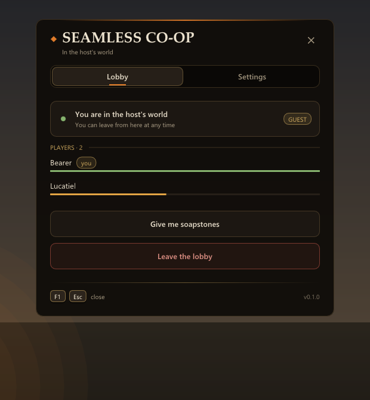
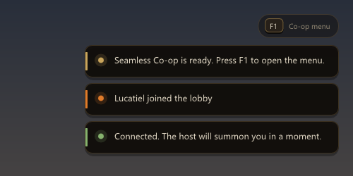
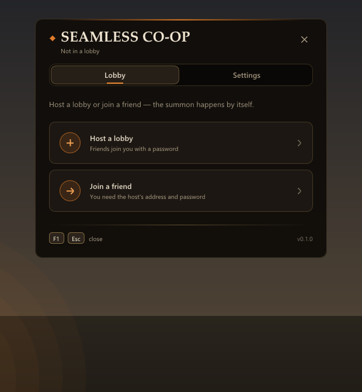
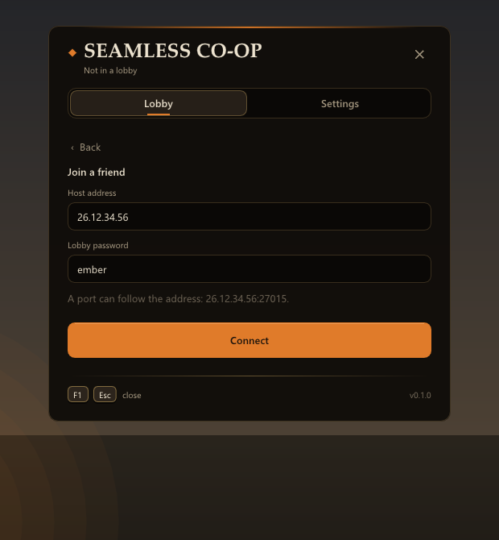
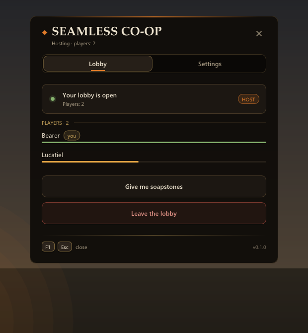
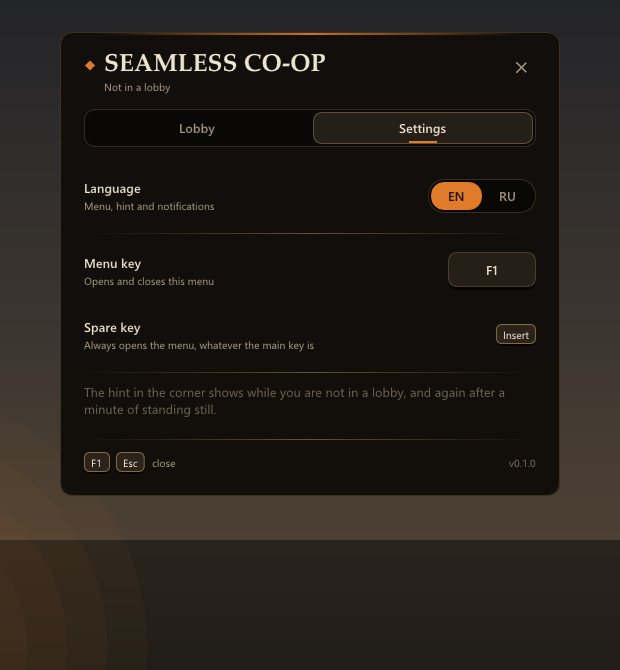

Every playerYou need
- Dark Souls II: Scholar of the First Sin on Steam (PC)
- Windows 10 or 11
- Radmin VPN (free), everyone in one network
Dark Souls II: Scholar of the First Sin · PC mod
Play the whole game with a friend. Their sign places itself and your game summons it — from anywhere, even Majula — and the co-op doesn't fall apart after a boss, a death or a new area.


What changes
You need no saves, no characters and no progress: join the host's lobby before either character exists, walk to the Fire Keepers' Dwelling side by side and each of you makes your own character there — name, class, looks — in one world. The whole game from the crones onwards is co-op.
Join from the in-game menu and that's it: the sign appears right under the host's feet and the host's game summons it by itself. No effigies, no soapstone hunting, no phantom timer — and it works where signs normally can't be placed.
Boss kills, deaths, bonfires and area changes don't send the guest home.
The guest walks the host's whole world, including areas where summoning is normally blocked.
Gates, shortcut bridges, lifts and statues stand for the guest the way the host left them, and enemies the host has killed stay dead.
The guest rests at the host's bonfires, and resting brings the enemies back for both players.
What the guest picks up in the host's world is theirs only, and it's gone from their own world afterwards — nothing is looted twice.
A guest who dies comes straight back to the host's world. The host dying doesn't kick anyone.
The host walks into the boss fog first and the guest follows; nobody comes back until the fight is decided.
Also: the guest can talk to NPCs; an in-game menu on F1 in English and Russian with a password-protected lobby; rejoining after a crash; a crash log for bug reports; and a one-click server for the host.
Getting started
Game folder, next to DarkSoulsII.exe.StartServer.bat. It shows your address for friends and makes the key file.ds2_server_public.key.Game folder.ds2_server_public.key there too.server_ip= in ds2_seamless_coop.ini.Host: F1 → Host a lobby → set a password. Friend: F1 → Join a friend → address and password, then stand somewhere (not at a bonfire) — the host's game summons you by itself.
Screenshots




Status